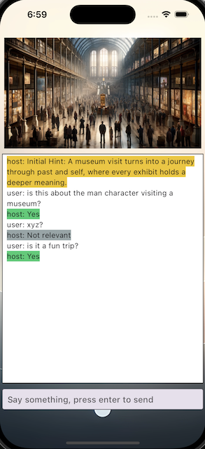

Mysti Minds
"You got some good stories? Shhhhh, don't tell me, let me guess..."
Unravel the Story, One Question at a Time
Do you have a knack for storytelling? In "Guess the Story," the challenge lies in piecing together a complete narrative by asking strategic questions that the host can only answer with "Yes," "No," or "Not Relevant."
Dive into Diverse Narratives
Our game features a variety of genres, from suspenseful mysteries and emotional dramas to somber tales and lighthearted anecdotes. Each story presents a unique challenge and an opportunity to test your deductive skills.
Join the Storytelling Community
"Telling is cheap, guess it yourself!" Our vision extends beyond creating a fun game; we aim to build a vibrant community of storytellers and guessers. Here, everyone can take turns being the storyteller and the inquisitive guesser, fostering an engaging and interactive experience.
Engage with Rewards
To enhance the community experience, we’re implementing a reward system to keep everyone motivated and excited about sharing and guessing stories.
Try Our Demo
We’ve launched a demo on the AppStore featuring three captivating stories of varying difficulty levels - easy, medium, and hard.
Download the demo, test your storytelling and guessing skills, and join our Discord server to share your feedback and connect with fellow players!
Start your journey in "Guess the Story" today and become a master of narrative deduction!
AppStore Link: https://apps.apple.com/us/app/mysti-minds/id6482230958
Discord Server: https://discord.gg/vRdRWYN6